Data Science Student & AI Researcher
BS candidate in Data Science at Boston University. I work at the intersection of machine learning research, AI security, and information theory — with a focus on mechanistic interpretability, reinforcement learning, and building things from scratch to understand them deeply.
Given "The war started in 1732 and ended in 17", GPT-2 small puts most of its probability on years greater than 32. I replicated the circuit analysis from Hanna, Liu & Variengien (2023) to find which heads implement this comparison, then studied where the model fails at temperature 0 and whether a steering vector can fix it.
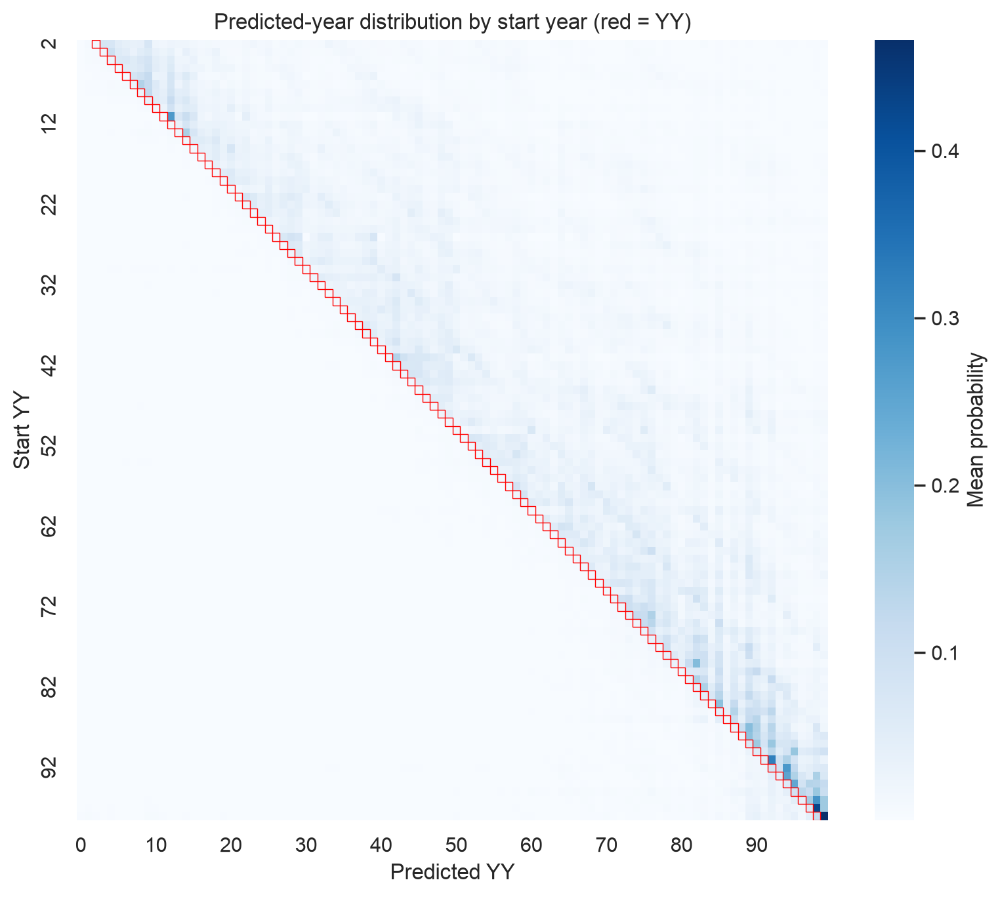
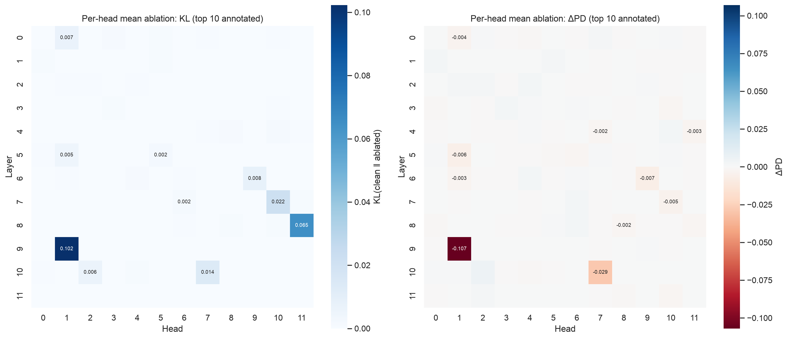
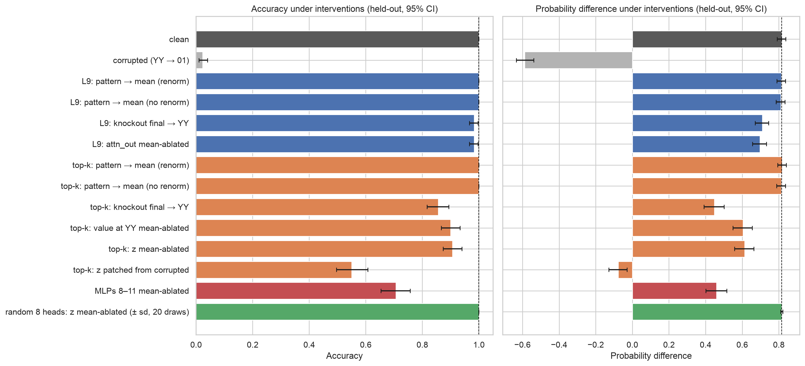
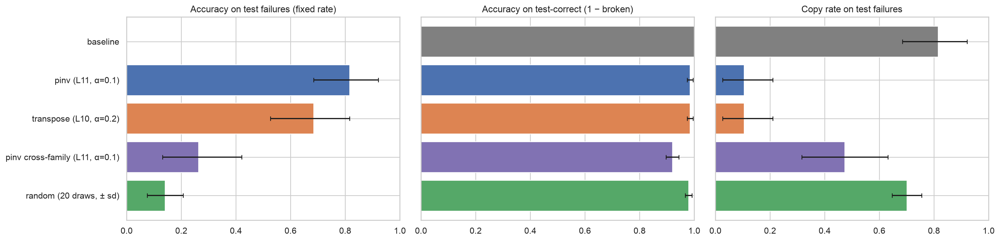
Working with Professor Lance Galletti on a research project aimed at understanding and visualizing the geometry of loss functions in neural networks. The goal is to build intuition for how optimization landscapes shape model behavior during training.
The animation below shows the decision boundary evolving epoch by epoch as a neural network learns to classify a two-circle dataset — illustrating how the loss surface guides the model toward a solution.
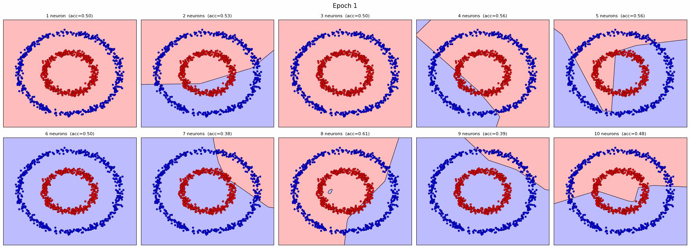
Decision boundary over training epochs — two-circle classificationAn XGBoost regression pipeline trained on five years (2014–2018) of US company fundamentals: about 22,000 company-year rows across roughly 5,000 tickers, each with 200+ income-statement, balance-sheet, cash-flow and valuation indicators. The model predicts a company's revenue growth from the rest of its fundamentals.
ColumnTransformer) with mean imputation for numeric features and one-hot encoding for categorical fields such as sector, then excluded price-return columns from the features to avoid leaking outcomes.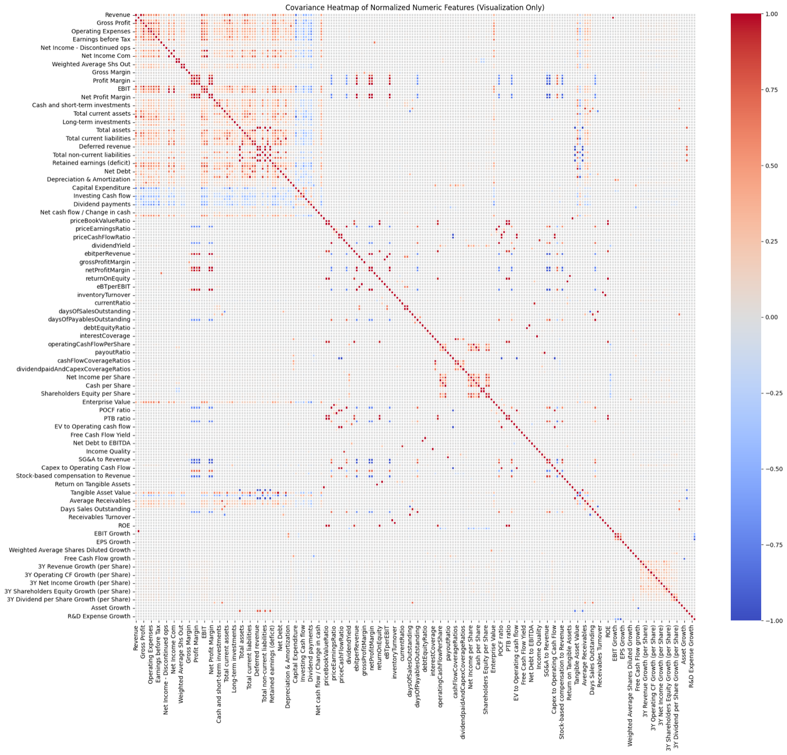
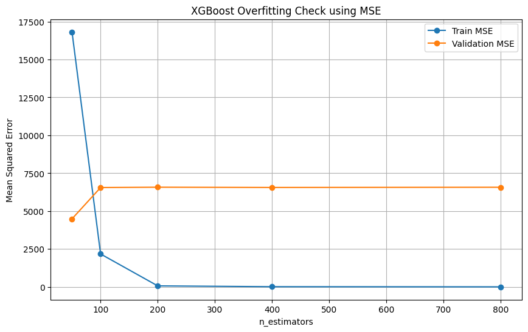
Implementing a transformer classifier from scratch in PyTorch — including self-attention and encoder blocks — to predict part-of-speech tags from raw word embeddings.
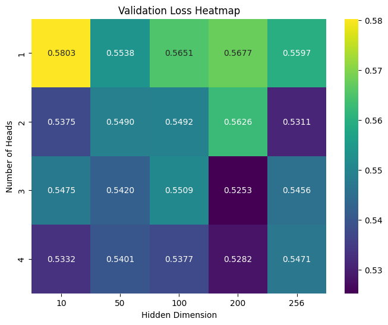
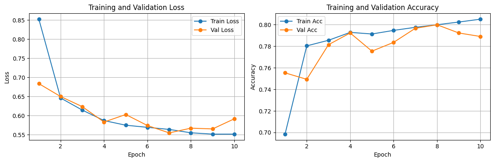
Finetuned ResNet-18 for facial expression classification, comparing full finetuning, partial finetuning, and Low Rank Adaptation (LoRA) to measure the effectiveness of each approach.
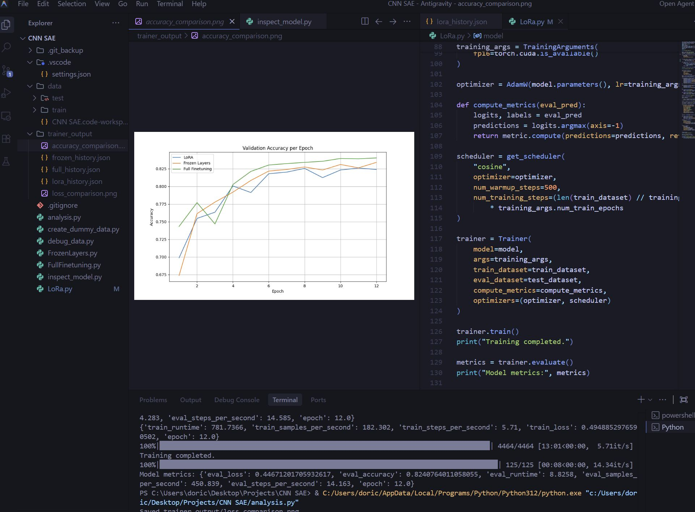
Built a neural network in Rust to predict link relationships between Wikipedia articles using Word2Vec embeddings, with a custom graph traversal module written entirely in Rust.
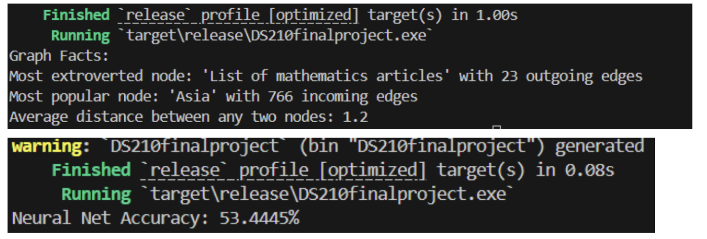